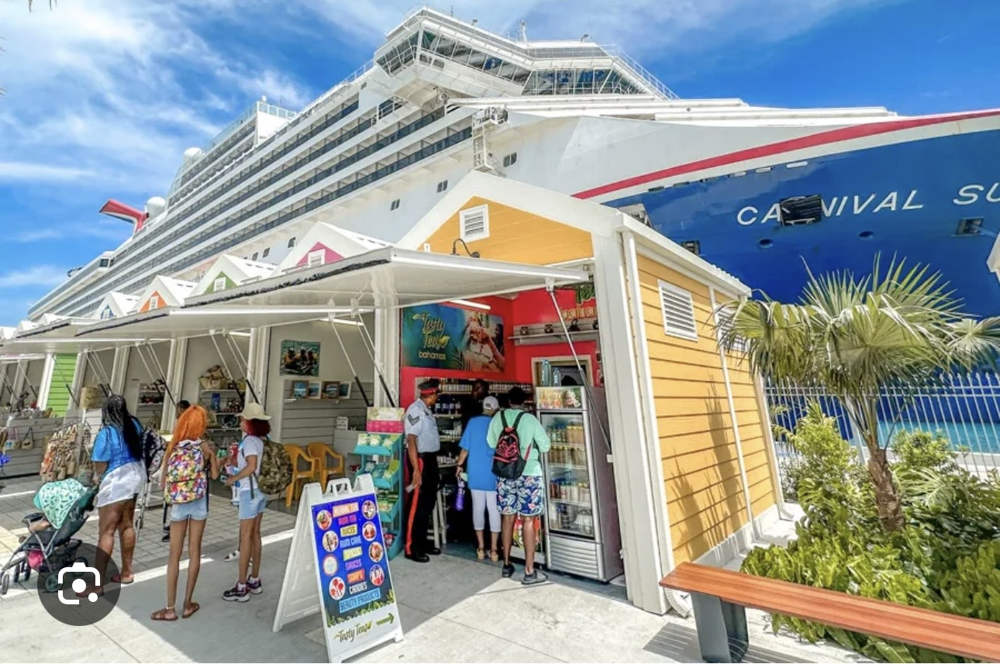

Our Services

✈️ Airport Transfers
Arrive in Nassau with peace of mind. Enjoy reliable private airport pickup, comfortable transportation, and a welcoming local experience from the moment you land.

🚢 Cruise Port Pickup
Explore Nassau after stepping off your cruise ship with convenient transportation to beaches, hotels, attractions, shopping, and island adventures.
🚖 Private Taxi Service
Travel throughout Nassau and Paradise Island with dependable local transportation for visitors, families, and private groups.
🌴 Island Tours
Experience the history, culture, beaches, and hidden gems of Nassau through personalized island tours created by a local guide.